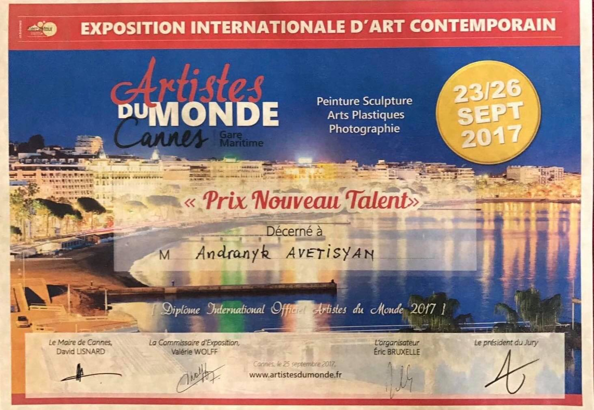

Аrtist Andranik Avetisyan (Ado) is the only artist in the world who creates works of art by cobwebs. Then a great idea came to his mind to create a picture of a spider web. And he began to study the life of the spiders and the structure of their webs. After that he began to breed the spiders and to use their webs in order to create the pictures. In 2017 he was awarded the prize of ''New Talent'' at the International contemporary art exhibition '' Artistes du Monde '' in Cannes France.

I have been always interested in understanding what life is, art, beginning, space, human relations and energy . It is for this reason that they have become my philosophical themes. I have presented my conclusions about all this through my pictures and my thoughts.
Life is a struggle for existence between evil and good where everything is merged into one another and turned into harmony, which is perceived by human senses.
The life is the existence of the thought in the space infinity.
The cobweb is the weapon for a spider with which he hunts insects for survival and for man the brain carries out this work. There is an interesting similarity here. The work of the neurons in the brain's nervous system is very similar to the cobweb.
Cobweb, in infinity is a picture of energy making a connection among all the objects in the universe.
After every work I enjoyed, I felt pretty happy. True, I do not know how much I have come to the truth because I try to find answers to many difficult questions that are not given to human beings. Anyway, being close to finding the truth seemed to me has always been a great victory.
The role of human existence, to call for life, information which is in the universe energy, in the form of the thought.